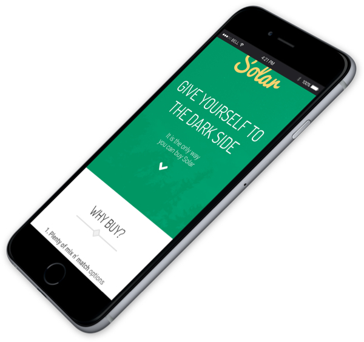

IN A GALAXY
FAR, FAR AWAY
Ready are you? What know you of ready? For eight hundred years have I trained Jedi. My own counsel will I keep on who is to be trained. A Jedi must have the deepest commitment, the most serious mind.
You should know better than to trust a strange computer
Insert interesting catchy fact here
It’s unrealistic to expect the user to be ready to convert after reading only that first hero section; they’re going to want to know more about your service before committing to it and this is the ideal opportunity to write a heartfelt, honest message to your customers about why they should choose you over anybody else - use this space wisely, young one.
Not convinced? Here's twopio reasons...
Heading
What makes this section so interesting is that there’s lots of whitespace up top to include a subtle background image that further clarifies your reasons to convert. Fear leads to anger. Anger leads to hate. Hate leads to conversions.
Heading
Yeeeah, anyway, that’s what these blocks are about - 2 smashing reasons to buy or subscribe to your service followed by, of course, a conversion button. If you need more reasons, then maybe the 3x2 block would be better.